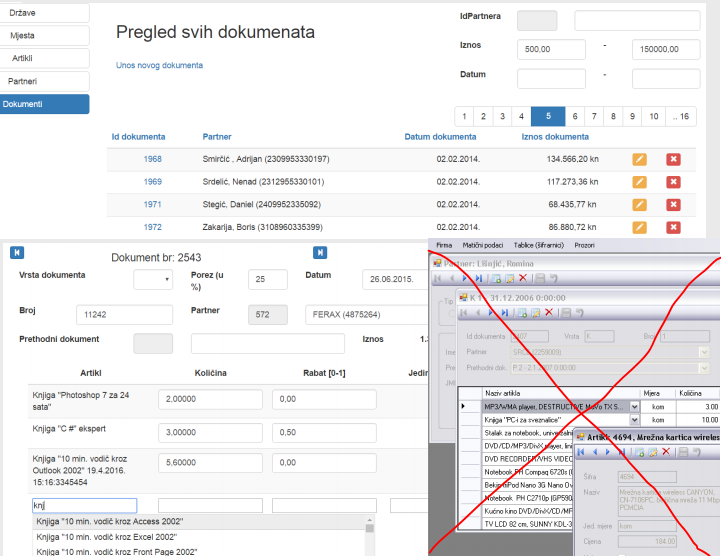

prvi do boga
Oni nam zadaju zadatak, prosle godine je bila kao web aplikacija za Covid-19, trebali smo voditi evidenciju o stozerima, drzavama, zarazenima, kontaktima i slicno. Ove godine je tema Javna nabava. U suštini oni zadaju zadatak tako da mi možemo izgraditi model u bazi podataka (zadatak zadaju tako da imam jedan intervju od oko 1h u kojem profesor Fertalj govori o temi pa mi zapisujemo o cemu je sve pricao), moramo napraviti minimalno 4*<broj_clanova_grupe> tablica u bazi podataka, zato sto svaki clan mora imati 4 tablice : Sifrarnik mastera - Master - Detail - Sifrarnik Detail-a
Master-Detail mora biti u vezi 1:N ili N:N, a oni prema svojim sifrarnicima N:1. Trebamo napraviti svatko crud operacije nad svojim entitetima, te omoguciti straničenje (ali na serverskoj strani), te sortiranje. Tu jos dolazi i validacija u pitanje i slicno. Ovako izgleda md forma (zanemari ovo prekrizeno, ss-ao sam prezentaciju)

Uglavnom, ova “Pregled svih dokumenata” je jedna stranica, tj. popis svih master-a, a kad kliknes na Id Dokumenta trebas dobiti ovu stranicu ispod “< Dokument bt. 2543 >” (samo su oni to stavili na isti slajd pa se mozda ne uoci granica). Njihov master je Dokument, a detail Stavka.
Nije toliko trivijalno napraviti, ali kako gledas prezentacije i pises kod, vec znas tocno sto trebas napraviti i postoji pretty much zacrtan put sto trebas napraviti. Pišeš controllere i html dokumente koji su prakticki kopija jedni drugih, sve je tako monotono, nemas nekog izbora kako to izvesti. Svede se na to da pogledaš njihove primjere te kopiras neki boiler plate dio koda te malo izmijenis za svoje potrebe. Naravno, taj cijeli kod je dosta zamršen i moze biti konfuzan za nekoga tko se s time 1. put susrece.
Video predavanja su zapravo jako dobra, Boris Milasinovic je dosta dobar predavac, detaljno i dobro objasni sto radi, zasto nesto dodaje u kod i slicno, ali je priroda kolegija takva da ti se smuči od njega. Stvar je da timski rad uopće nije potreban jer ne ovisiš mnogo o tome što drugi članovi tima rade. Postoji na pocetku neki timski rad oko oblikovanja baze te dokumentacije koja je memeasta i neozbiljna.